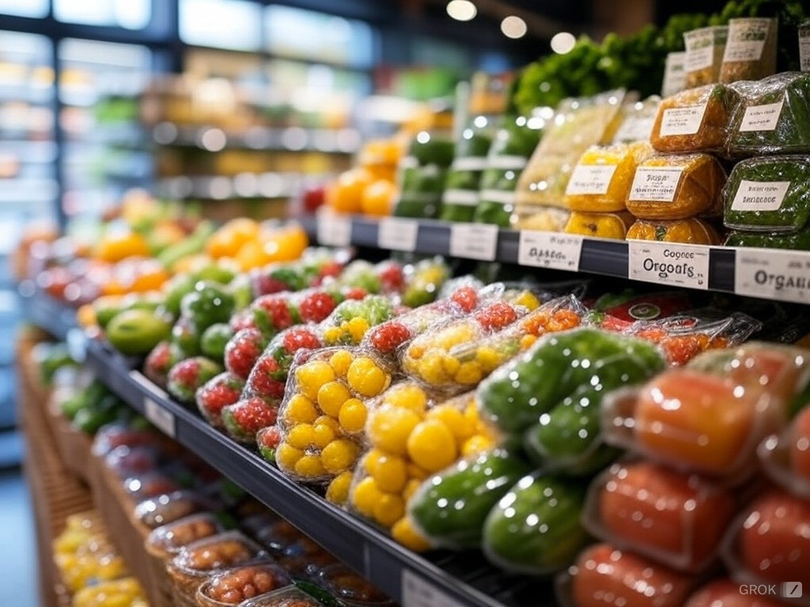
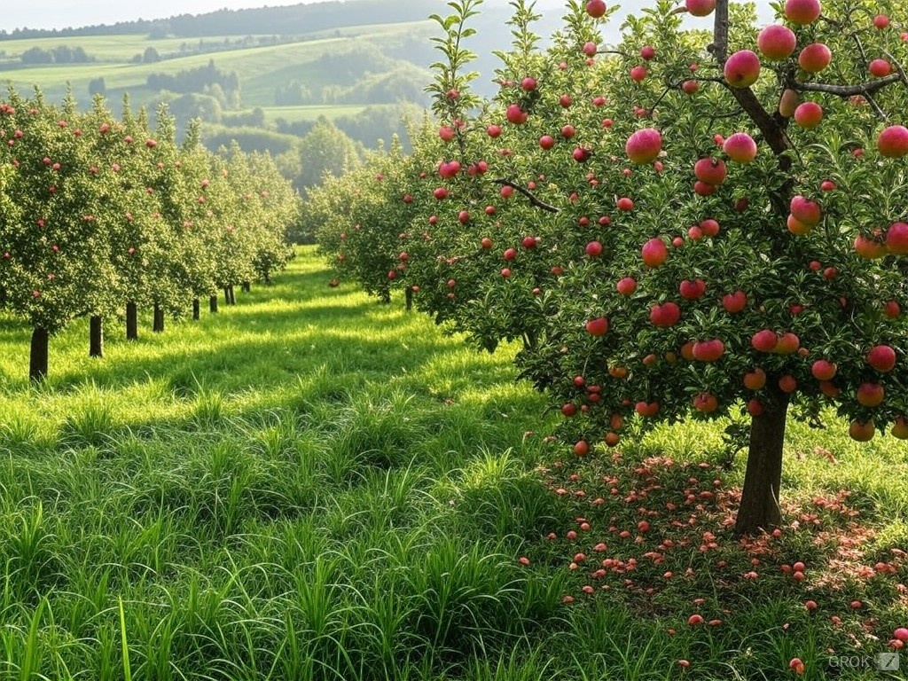

Domande Frequenti

Quali sono le colture più redditizie?
Le colture bio e di nicchia come zafferano e quinoa sono in crescita.

Come proteggere le piante dalle malattie?
Monitorare il clima e utilizzare pesticidi naturali sono strategie efficaci.

Quali sono i trend di mercato?
Cresce l'interesse per i prodotti bio e i superfood.
Invia la tua Domanda
Domande Senza Risposta
Qual è la migliore tecnica di irrigazione per colture di frutta?
Come ridurre l'uso di pesticidi senza compromettere la salute delle colture?
Risposte della Community

Quali sono le migliori varietà di mele da coltivare in un piccolo frutteto?
Varietà come la Red Delicious, la Golden Delicious e la Granny Smith sono molto popolari e si adattano a diverse condizioni climatiche.
Valutazione: 4.8/5

Come si prepara un fertilizzante naturale per le piante?
Si possono utilizzare composti, letame maturo, ortica fermentata e altri materiali organici per creare fertilizzanti naturali.
Valutazione: 4.6/5